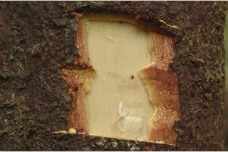
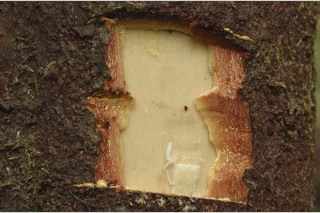
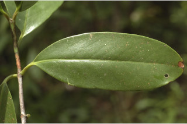
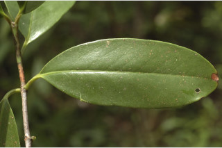
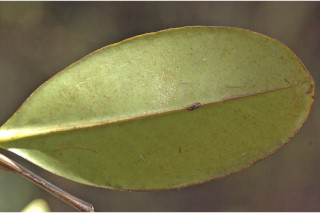
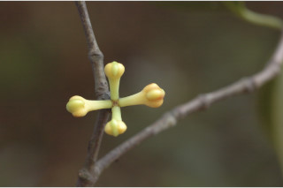
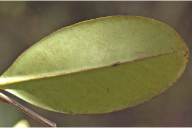
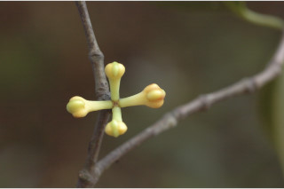
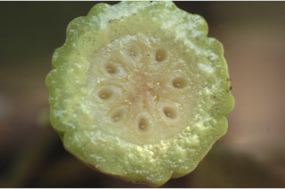
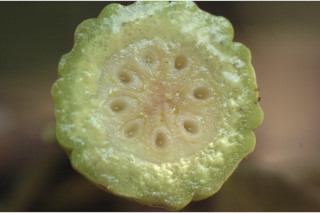

Trees up to 12 m tall.
12 ಮೀ ಎತ್ತರದವರೆಗೆ ಬೆಳೆಯುವ ಮರಗಳು.
12 മീറ്റര് വരെ ഉയരത്തില് വളരുന്ന മരങ്ങള്.
மரம் 12 மீ. உயரம் வரை வளரக்கூடியது.
Outer bark reddish brown, lenticellate; blaze reddish.
ಹೊರ ತೊಗಟೆ ಕೆಂಪು ಮಿಶ್ರಿತ ಕಂದು ಬಣ್ಣದಲ್ಲಿದ್ದು ವಾಯುವಿನಿಮಯ ಬೆಂಡುರಂಧ್ರ ಸಹಿತವಾಗಿರುತ್ತದೆ; ಕಚ್ಚು ಮಾಡಿದ ಜಾಗ ಕೆಂಪಾಗಿರುತ್ತದೆ.
ശ്വസനരന്ധ്രങ്ങളോടുകൂടിയ, ചുവപ്പ് കലര്ന്ന തവിട്ടുനിറത്തിലുള്ള പുറംതൊലി; വെട്ടുപാടിന് ചുവപ്പ് നിറം.
மரத்தின் வெளிப்புறப்பட்டை சிவப்பு கலந்த ப்ரவுன் நிறமானது லெண்டிசெல்லேட்; உள்பட்டை சிவப்பானது.
Branches drooping; young branchlets subterete, glabrous.
ಕವಲುಗಳು ಇಳಿಬಿದ್ದಿರುತ್ತವೆ; ಎಳೆಯದಾದ ಕಿರುಕೊಂಬೆಗಳು ಉಪದುಂಡಾಕಾರದಲ್ಲಿದ್ದು ರೋಮರಹಿತವಾಗಿರುತ್ತವೆ.
തൂങ്ങിക്കിടക്കുന്ന ശാഖകള്; ഇളംശാഖകള് ഏതാ് ഉരുതും, അരോമിലവും .
கிளைகள் தொங்கியவை; சிறிய நுனிக்கிளைகள் குறுக்குவெட்டுத் தோற்றத்தில் வளையமானது, உரோமங்களற்றது.
Latex yellow, profuse.
ಸಸ್ಯಕ್ಷೀರ ಹೇರಳವಾಗಿದ್ದು, ಹಳದಿ ಬಣ್ಣ ಹೊಂದಿರುತ್ತದೆ .
നന്നായി ഊറുന്ന മഞ്ഞ സ്രവം.
சாறு மஞ்சள் நிறமானது, அதிகளவில் உண்டாகின்றது.
Leaves simple, opposite, decussate; petiole 5-1.6 cm long, planoconvex or shallowly canaliculate above, slightly sheathing at base; lamina 5-13 x 2-6 cm; variable in shape from narrow elliptic, oblanceolate to obovate, apex usually acute, sometimes obtuse, base cuneate to attenuate, coriaceous or subcoriaceous; secondary_nerves not prominent on both sides; tertiary_nerves obscure.
ಎಲೆಗಳು ಸರಳವಾಗಿದ್ದು,ಕತ್ತರಿಯಾಕಾರದ ಅಭಿಮುಖ ಜೋಡನಾ ವ್ಯವಸ್ಥೆ,ಯಲ್ಲಿ-ರುತ್ತವೆ;ಎಲೆತೊಟ್ಟು 0.5 ರಿಂದ 1.6 ಸೆಂ.ಮೀ ಉದ್ದವಾಗಿದ್ದು, ಪೀನಮಧ್ಯ ಅಥವಾ ಆಳವಿಲ್ಲದ ಕಾಲುವೆ ಗೆರೆಗಳನ್ನು ಮೇಲ್ಭಾಗದಲ್ಲಿ ಹೊಂದ್ದಿದ್ದು ಒರೆಯುಳ್ಳ ಬುಡಭಾಗ ಹೊಂದಿರುತ್ತದೆ; ಎಲೆಪತ್ರಗಳು 5 -13 X 2 - 6 ಸೆಂ.ಮೀ ಗಾತ್ರ ಹೊಂದಿರುತ್ತವೆ; ಆಕಾರದಲ್ಲಿ ಬುಗುರಿ – ಭರ್ಜಿ ಸಮ್ಮಿಶ್ರಾಕಾರದಿಂದ ಬುಗುರಿಯಾಕಾರ-ದವರೆಗಿನ ವೈವಿಧ್ಯತೆಯನ್ನು ಹೊಂದಿರುತ್ತವೆ; ಸಾಮಾನ್ಯವಾಗಿ,ಎಲೆತುದಿ ಚೂಪಾಗಿದ್ದು ಕೆಲವು ವೇಳೆ ಚೂಪಲ್ಲದ ಮಾದರಿಯದಾಗಿರುತ್ತವೆ, ಎಲೆಯ ಬುಡ ಬೆಣೆಯಾಕಾರದಿಂದ ಹಿಡಿದು ಒಳಬಾಗಿದ ತಳವುಳ್ಳ ಮಾದರಿಯವರೆಗಿನ ರೀತಿಯದಾಗಿರುತ್ತದೆ, ಎಲೆಗಳು ತೊಗಲು ಅಥವಾ ಉಪ ತೊಗಲನ್ನೋಲುವ ಮಾದರಿಯವು; ಎರಡನೇ ದರ್ಜೆಯ ನಾಳಗಳು ಪತ್ರದ ಎರಡೂ ಬದಿಯಲ್ಲಿ ಪ್ರಮುಖವಾಗಿರುವುದಿಲ್ಲ; ಮೂರನೇ ದರ್ಜೆಯ ನಾಳಗಳು ಅಸ್ಪಷ್ಟ.
സമ്മുഖ, ഡെക്കുസേറ്റ് ക്രമത്തിലുള്ള ലഘുപത്രങ്ങള്; ഇലഞെട്ടിന് 5 സെ.മി മുതല് 1.6 സെ.മി വരെ നീളവും, മുകള്ഭാഗം പരന്നും കീഴ്ഭാഗം ഉരുുമിരിക്കുന്ന ഘടനയോ മുകളില് ചാലോട് കൂടിയതോ, കീഴറ്റം ചെറുതായി പോളയോടുകൂടിയതാണ്; പത്രഫലകത്തിന് 5 സെ.മി മുതല് 13 സെ.മി വരെ നീളവും 2 സെ.മി മുതല് 6 സെ.മി വരെ വീതിയും; ആകൃതി വീതി കുറഞ്ഞ ദീര്ഘവൃത്തമോ അപകുന്തകാരമോ അപഅണ്ഡാകാരമോ ആയി പലവിധത്തില്, പത്ര3ഗ്രം സാധാരണയായി നിശിതമാണ്. ചിലപ്പോള് ഉപകോണാകാരത്തില് ആണ്, പത്രാധാരം ആപാകാരം തൊട്ട് നേര്ത്തവസാനിക്കുന്നതോ ആവാം, ചര്മ്മിലമോ ഉപചര്മ്മിലമോ ആയ പ്രകൃതം; ദ്വിതിയ ഞരമ്പുകള് ഇരുഭാഗത്തും അത്ര വ്യക്തമല്ല; ത്രിതീയ ഞരമ്പുകള് അപ്രസക്തം.
இலைகள் தனித்தவை, எதிரடுக்கமானவை, குறுக்குமறுக்கமானவை; இலைக்காம்பு 5-1.6 செ.மீ. நீளமானது, குறுக்குவெட்டுத் தோற்றத்தில் பிளேனோகான்வக்ஸ் அல்லது கேனாலிகுலேட், தளத்தில் சிறிது உறை போன்றது; இலை அலகு 5-13 X 2-6 செ.மீ., பல்வேறு வடிவுடையது, குறுகிய நீள்வட்ட வடிவம், தலைகீழ் ஈட்டி முதல் தலைகீழ் முட்டை வடிவானது, அலகின் நுனி பொதுவாக கூரியது, சிலசமயங்களில் மழுங்கியது, அலகின் தளம் ஆப்பு வடிவம் முதல் அட்டனுவேட், கோரியேசியஸ்; இரண்டாம் நிலை நரம்புகள் இலையின் இருபுறத்திலும் தெளிவற்றது; மூன்றாம் நிலை நரம்புகள் அற்றவை.
Flowers polygamous, in axillary or terminal clusters; calyx cream; petals pink.
ಹೂಗಳು ಸಂಕೀರ್ಣಲಿಂಗಿಗಳಾಗಿದ್ದು, ಅಕ್ಷಾಕಂಕುಳಿನಲ್ಲಿರುವ ಅಥವಾತುದಿಯಲ್ಲಿನ ಗುಚ್ಛಗಳಲ್ಲಿರುತ್ತವೆ; ಪುಷ್ಪಪತ್ರ ಕೆನೆ ಬಣ್ಣ ಹೊಂದಿದ್ದು ಪುಷ್ಪದಳಗಳು ನಸುಗೆಂಪಾಗಿರುತ್ತವೆ.
ബഹുലിംഗികളായ പൂക്കള്, കക്ഷീയമോ ഉച്ഛ്സ്ഥമോ ആയ കൂട്ടങ്ങളിലുാകുന്നു; ബാഹ്യദളത്തിന് ക്രീം നിറം; ദളങ്ങള്ക്ക് പിങ്ക് നിറം.
மலர்கள் ஒர்பாலானவை மற்றும் இருபாலானவை மலர்கள் கலந்தவை (பாலிகேமஸ்), இலைக்கோணங்களில் அல்லது தண்டின் நுனியில் கொத்தாக காணப்படுபவை; புல்லி இதழ்கள் கிரீம் நிறமானது; அல்லி இதழ்கள் பிங்க் நிறமானது.
Berry, globose, 6-8 grooved, to 5 cm in diameter; many seeded.
ಬೆರ್ರಿ ಗಳು ಗೋಳಾಕಾರದಲ್ಲಿದ್ದು,8 ರಿಂದ 10 ತೋಡುಗುರುತುಗಳ ಸಮೇತವಿದ್ದು, 5 ಸೆಂ.ಮೀ ವ್ಯಾಸವನ್ನು ಹೊಂದಿದ್ದುಅನೇಕ ಬೀಜಗಳನ್ನು ಒಳಗೊಂಡಿರುತ್ತವೆ.
കായ 5 സെ.മി വരെ വ്യാസമുള്ളതും, 6 തൊട്ട് 8 വരെ ചാലോടുകൂടിയതുമായ, ഗോളാകാര ബെറി ആണ്; ധാരാളം വിത്തുകള്.
முழுச்சதைகனி (பெர்ரி), கோளவடிவானது, 6-8 பள்ளமேடுகளுடையது, 5 செ.மீ. குறுக்களவுடையது; அதிக விதையுடையது.
 

 

 





 
